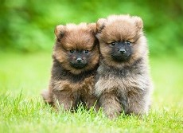

Pas
Pas (lat. Canis lupus familiaris) je pripitomljeni sisar iz porodice Canidae. Arheološki nalazi dokazuju da pas najmanje 9000 godina živi uz čoveka, iako postoje indicije da se taj period produži na čitavih 14.000 godina. Fosilni ostaci pokazuju da su preci modernog psa živeli uz čoveka još pre 10.000 godina.Danas postoji oko 40 miliona pasa i oko 800 rasa (što je više nego bilo koja druga vrsta životinje) najrazličitijih dimenzija, fizionomije i temperamenta, i koje predstavljaju najrazličitije verijetete boje i vrste dlake. Pas je usko povezan sa čovekom, kome služi kao kućni ljubimac, kao čuvar, vodič, ovčar i dr. Pas je jedna od najrasprostranjenijih životinja na svetu čiju popularnost nadmašuje jedino mačka.Pas je podvrsta sivog vuka, za koga se veruje da je direktni predak psa. Najnovija istraživanja potvrđuju da je pas bio po prvi put pripitomljen na istoku Azije, najverovatnije u Kini. Takođe, nije sigurno da svi domaći psi potiču od iste grupe ili se proces domestikacije ponovio više puta na više mesta.
Uvod
Psi, kao i ljudi, su visoko društvena bića i ova sličnost ih je vremenom zbližila. Ova sličnost je omogućila psima jedinstvenu poziciju u životu čovjeka. Lojalnost i posvećenost koju psi demonstriraju kao dio njihovog prirodnog instinkta unutar čopora, približno odražava ljudsku ideju o ljubavi, zbog čega ih mnogi vlasnici smatraju kao punopravne članove porodice.  Isto tako, psi izgleda da vide svoje vlasnike kao članove svog čopora, praveći samo nekoliko (a možda i ne praveći) razlike između svojih vlasnika i drugih pasa. Psi mogu imati različite uloge u ljudskom društvu i često se treniraju kao radni psi. Danas je možda najvažnija uloga psa kao saputnika i prijatelja. Psi su živjeli i radili sa ljudima na mnogo načina, pa su zbog toga i zaslužili titulu „čovekovog najboljeg prijatelja“. Sa druge strane, neke kulture smatraju pse veoma prljavim životinjama, dok ih pojedine upotrebljavaju i za ishranu.Isto tako, psi izgleda da vide svoje vlasnike kao članove svog čopora, praveći samo nekoliko (a možda i ne praveći) razlike između svojih vlasnika i drugih pasa. Psi mogu imati različite uloge u ljudskom društvu i često se treniraju kao radni psi. Danas je možda najvažnija uloga psa kao saputnika i prijatelja. Psi su živjeli i radili sa ljudima na mnogo načina, pa su zbog toga i zaslužili titulu „čovekovog najboljeg prijatelja“.
Poreklo
Psi su bili prve domaće životinje među sisavcima. Ljudi su ih pripitomili prije otprilike 12 000 godina. Sve pasmine potječu od vuka (Canis lupus) unatoč tvrdnjama nekih da potječu i od lisica.Psi su vjerojatno prve pripitomljene životinje, koje čovjeku vjerno služe sve do danas. Ljudi su ih selektivno razmnožavali za mnoge namjene, a rezultat je toga životinja različitih oblika, veličina i sposobnosti.Pas, Canis familiaris, kralježnjak je, sisavac i zvijer, pripadnik porodice pasa (Canidae) koja obuhvaća i lisicu, čaglja, vuka te australskog dinga. Njuška mu je vlažna, posjeduje izvrstan njuh i vrlo je društven. Izrazito dobro trči i spretno pliva te može vrlo brzo mijenjati smjer trka. Dok spava, često ga prate sni u kojima trza repom, cvili i potiho laje i reži.Smatra se da je predak psa bila životinja slična vuku - vjerojatno mješanac izmedu vuka i čaglja - koja je živjela prije nekoliko milijuna godina. Čak se i danas pripitomljeni psi mogu uspješno razmnožavati s vukovima i čagljevima. Neki smatraju da se svi psi mogu podijeliti u dvije velike skupine - na one koji su slični vukovima i na one koji su slični čagljevima.Bez obzira na isitnu o njihovu podrijetlu, potpuno je jasno da su psi po prvi put pripitomljeni još u kamenom dobu - prije najmanje 50.000, a vrlo vjerovatno čak i 100.000 godina. Sve ovo doznajemo s crteža iz paleolitika (staro kameno doba) koji prikazuju lov ljudi s psima. Najstariji ostaci pitomih pasa pronađeni su u iskopinama europskih naseobina, a datiraju iz kasnog mezolitika (srednje kameno doba). Ti ostaci nalikuju dingu, divljem psu udomaćenom u Australiji.O razlozima zbog kojih se psa počelo smatrati "čovjekovim najboljim prijateljem" postoje mnoge teorije, ali nisu pronađeni dokazi koji bi ijednu od njih potvrdili.